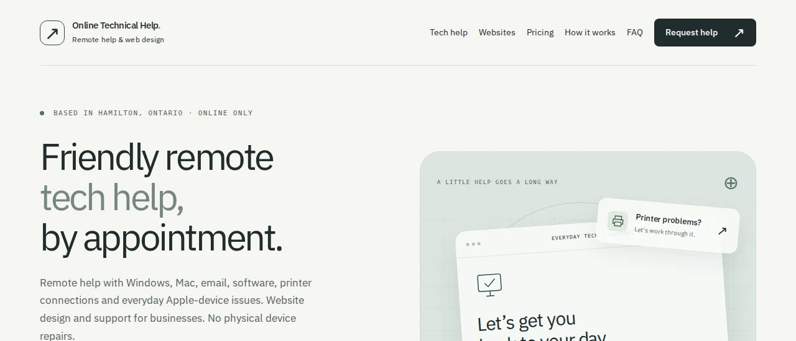
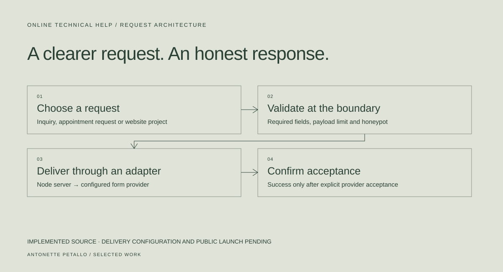

01 / SERVICE DESIGN & DEVELOPMENT
ANTONETTE PETALLOOnline Technical Help.
A remote-support website that turns an open-ended tech problem into a clearer, scoped request.
- Context & contribution
- Independent service project · AI-assisted development
- Tools & methods
- HTML, CSS, JavaScript, Node.js
- Current status
- Implementation in repository; public launch pending


Make the first step easier.
People asking for tech help do not always know which service they need. A general question, a request for an appointment, and a website project need different information.
This project separates those paths while keeping the service remote-only and the next step understandable. My focus is the service scope, request flow and clear expectations; AI tools assist the implementation and iteration.
A small backend for a specific reason.
The interface uses semantic HTML, CSS and browser JavaScript. A Node HTTP server validates requests and provides a delivery adapter. That backend is useful here because a browser alone cannot enforce request limits or protect the delivery flow.
- Separate inquiry, booking and website-project flows collect information suited to the request.
- Validation, a honeypot, payload limits and request throttling sit at the server boundary.
- A provider must explicitly accept a request before the interface reports success.
- Missing delivery configuration returns an honest unavailable state and preserves the visitor’s input.
A request is not a confirmed appointment.
Preferred dates and times are requests. They do not automatically create a booking. There is no connected calendar, payment processing or promise of an immediate response.
Throttling is currently stored in process memory. Hosting behind a proxy or running multiple instances needs an appropriate trusted client-IP or edge limit strategy before public launch.
Implemented, with a clear launch boundary.
The public repository includes the service interface, server, validation and automated checks. Form-provider verification, actual inbox delivery and production hosting are still outstanding. I am not presenting this as a launched service platform.
What this demonstrates: translating a real service into distinct workflows, defining honest states, and considering what has to happen beyond the interface.
Evidence reviewed · October 28, 2026
Public source; no
production outcome claimed.